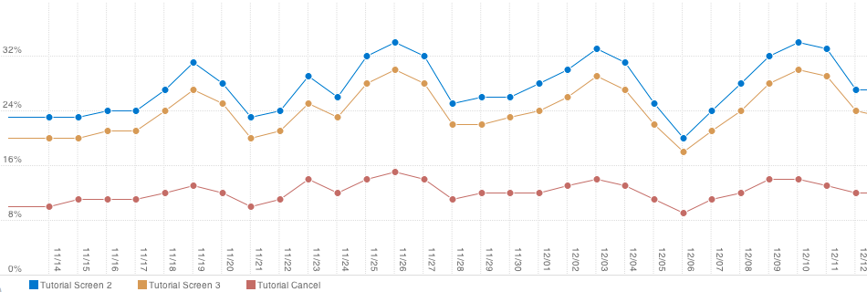
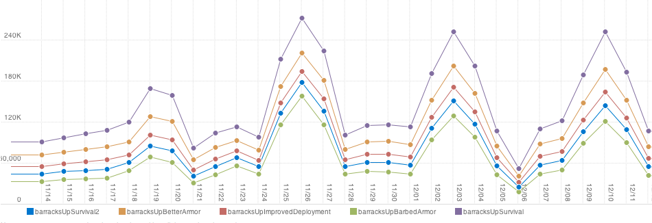

Case study - Ironhide Game Studio
Ironhide Game Studio based in Montevideo, Uruguay is the creator of the hit iOS and Flash game Kingdom Rush. With over 50 million plays to date, Ironhide chose Playtomic to better understand their players.
Here's what Alvaro Azofra, their co-founder had to say:
Player progression

In Kingdom Rush, the developer team used Playtomic to detect where player drop offs occur in each enemy wave. With this information, the team was able to smoothen the difficulty curve. Now, most players could reach the interesting parts of the game, instead of being frustrated in early levels.
Tweaking tutorials
A great tutorial makes a great game. The developer team for Kingdom Rush tracked how far along their players progress through the tutorial screens, and adjusted the content to produce minimum cancel rates.
Custom events
Kingdom Rush utilizes Playtomic to track custom events, to see what players liked the most: from unit upgrades to buildings. The developer team found that players tended to overuse barracks. To solve this phenomenon, they placed a strategy tip on stage 2, to help educate players that barracks should be supported by towers.
What we can do
Playtomic gives you detailed information on what is happening in your game and unparalleled access to detailed gameplay information.
We offer game developers of virtually any platform, our analytics and game development tools that are specifically designed with casual gaming in mind.
Because Playtomic is designed specifically for games we cover a variety of platforms so you can track detailed information as a cross-platform publisher and see how your game performs on iPhone, iPod Touch and iPad, the internet, downloadable and more.
You can easily use the same tools across all your game development tools, share leaderboards and user generated content and more across other platforms your game is on. Our HTML5, Unity3d, iOS and C++, Flash and Android APIs are zero friction
Register now
Playtomic is free to use and only takes a few minutes to set up in your game.
These awesome features are waiting for you:
- GameVars that let you store configuration or anything else in our database and load it in to your game at runtime, allowing you to make updates without resubmitting a new version
- Custom metrics that let you track any data you want
- Level metrics that give you deep insight into how users are actually performing in your game's levels or areas.
- Engagement metrics that help you monitor the overall user satisfaction and retention
- Public reports you can share with your friends, advertisers or relevant parties
- Heatmaps that can pinpoint areas of interest in your levels, screens, mas etc
- Very flexible leaderboards that can be dynamically created in-game, include custom data in scores, and filter by custom data - automatically have a leaderboard for every vehicle in your racing game
- Level sharing for player-created levels or other user generated content
Goodbye
Friends, Playtomic has come to an end. Part of this service will live on at Playtomic.org as a self-hosted, open source platform I am continuing to develop in my spare time. The rest is unfortunately finished.